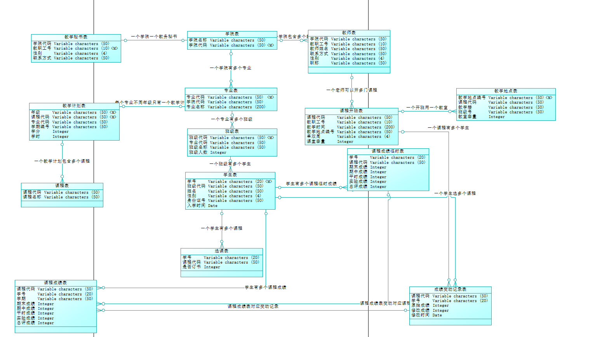

这是一个课堂作业;
需求
请仔细阅读下面的用户需求：
现在学校需要开发一个教务管理系统，系统的概述如下。
一个学校由很多个学院组成，每个学院有多个专业，每个专业有1个或者多个班级。一个学生只属于1个班级，学生有姓名、学号、性别、身份证号、入学时间等属性。
每个专业的每个年级都有对应的教学计划。教学计划指定了这个专业这个年级的某门课程在那个学期上，学分、学时是多少。每个学院都设置有1个教务秘书，这些信息都由教务秘书进行输入。每个院系的课程都有自己的唯一编码，比如计算机系上的C语言，和电子系上的C语言，虽然都是同一门课，但是编码是不同的。但是同一个院系中的相同的课程，课程代码是唯一的。比如计算机学院的12计算机软件专业和计算机学院的12计算机科学专业都有C语言课程，这两门课程的课程代码是相同的。
教务秘书在每个学期的中间时刻，为下一个学期进行排课，排课的内容根据教学计划，比如12计算机软件专业的学生，在2015-2016年第1学期上的课程，可以通过教学计划得知要上什么课程，然后对这些课程安排上课教师（比如陈越）、上课时间（比如星期2，第1-2节）和地点（理工楼234），有的课程是单周上，有的双周，也有是每周都上的。
在每个学期期末，学生登录到网站上选择下一个学期需要上的课，选择的时刻，可以选择是否需要教材，如果某门课程的人数选满了，则不能给任何学生选择了。
学生根据选择的课程进行上课，参加考试。每个老师可以用自己的用户名和密码登陆网站，选择这个学期自己所教的课程（一个老师可以上多个班级的课程），输入这个班级的成绩，成绩分为期末考试成绩、期中考试成绩、平时成绩、实验成绩以及总评成绩。这些成绩都需要进行存储。
当学生对自己取得的成绩不满意时，可以重修。重修一般采用跟班学习的方式。比如13级某个学生没有通过数据库原理，则他可以跟着14级再去上一次。因此，对于学生而言，在成绩表中，重修成绩会是单独一行记录。如果重修了很多次，则有很多次重修成绩记录。学校不规定学生重修的次数，不过重修的时候，上过的所有课程的课程代码是一样的。
为了保证安全性，老师输入的成绩并不是直接放到最终的成绩表中，而是放在一个临时的表中，只有当教务秘书审核过后，才导入到最终的成绩表中。
学生在老师输入完成绩、教务秘书审核后，可以登录到网上查询自己某个学期的成绩。
成绩数据非常重要，为了防止教务秘书随意更改成绩，需要对成绩表的插入、删除、修改做出监控，凡是对成绩表做了上述操作，必须记录下来，放在另外一个表中，可以称为成绩变动记录表，这个表要求记录在什么时候，更新了那个同学那门课的成绩数据，原始值是什么，现在值是什么。如果是插入，则原始值为NULL，如果是删除，则现在值是NULL。
为了在数据库层次上保证数据库的安全性，在数据库中，建立两类数据库用户，一类是教务秘书访问的，称为U_JWMS,这个用户能对除了成绩变动记录表不能访问外，可以对所有的数据进行修改、选择、删除、插入。另外一类用户成为U_Web， 是为Web用户访问所设计的。这类用户只对学生选课的数据、老师输入成绩的临时的表据有删除、插入、修改权限，其它的表只有只读的权限。
请根据这段描述，结合的实际情况，设计数据库。比如对于班级，应该有个班级表，班级表中的字段，可以根据自己的班级进行设置：比如班级代码、班级简称、班级人数等。大家应该找到这里面描述的实体，结合实际的情况，合理的设计数据库表及其字段。
同时，编写一个函数，传入学生的学号后，计算出其平均学分积点(GPA).GPA的计算公式如下。 Σ每门课学分*绩点/Σ每门课学分。 当成绩大于等于60分，绩点=（成绩-50）/10， 如果成绩小于60分，则绩点为0 。注意，需要考虑到重修问题，重修时，我们取其最高成绩计算GPA.
编写一个存储过程，要求返回学生的所有课程的成绩。如果一门课有多次重修，我们只要获取其最高一次的分数返回即可。
E-R图
仔细分析上面的需求, 用powerdesigner画出E-R图.
